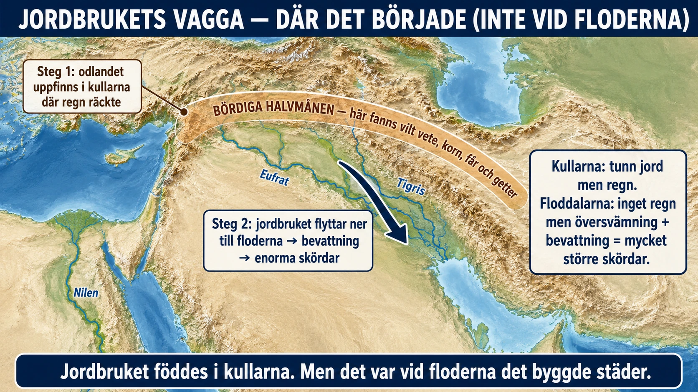

Standardtexten säger att de första jordbrukarna bosatte sig vid de stora floderna. Det är sant för de stora högkulturerna — men det är inte där jordbruket började. Om vi vill hitta jordbrukets allra första vagga måste vi lämna floddalarna och gå upp i kullarna.

De vilda förfäderna. Vårt vete och korn har vilda släktingar — gräs som växte av sig själva långt innan någon odlade dem. De växte inte nere på de torra slätterna vid floderna, utan uppe i ett böljande, kuperat landskap i dagens Turkiet, Syrien, Irak och området kring Israel och Libanon. Regionen brukar kallas Bördiga halvmånen, efter sin böjda form på kartan. Här, i kullarna, fanns allt en blivande bonde behövde redan från början: vilt vete, vild korn, vilda ärtor och linser, och vilda får och getter att tämja. Naturen hade lagt ut råvarorna — det gällde bara att lära sig använda dem.
Varför just då? När den senaste istiden tog slut, för omkring 11 000–12 000 år sedan, blev klimatet varmare och stabilare. De vilda gräsen blev vanligare och växte i stora, täta bestånd. Människorna som levde där började först skörda dem vilda, sedan spara de bästa fröna, och till slut så dem med flit. Steg för steg, under hundratals år, förvandlades vilt gräs till odlad gröda och vilda djur till boskap. Det skedde inte på en enda dag och inte på en enda plats — men Bördiga halvmånens kullar var en av de första platserna i världen där det hände.
Så — varför flyttade de ner till floderna? Här kommer själva poängen. Kullarna var jordbrukets födelseplats, men de var inte där det växte sig störst. Uppe i kullarna regnade det tillräckligt för att gräsen skulle gro, men jorden var tunn och den odlingsbara ytan begränsad. Nere i floddalarna var det tvärtom: nästan inget regn, men en flod som varje år svämmade över och lade ny, bördig jord över åkrarna. När människorna väl lärt sig odla, och lärt sig leda flodens vatten med kanaler, kunde de i floddalarna få skördar som var långt större än något kullarna kunde ge. En enda bevattnad floddal kunde föda tusentals människor tätt tillsammans.
Två steg, inte ett. Jordbrukets historia har alltså två steg som lätt smälter ihop till ett. Först uppfanns odlandet uppe i kullarna, där de vilda växterna råkade finnas. Sedan flyttade det ner till floderna, där bevattningen gjorde det enormt mycket mer produktivt. Det var i det andra steget — nere vid floderna — som byarna kunde växa till städer, och städerna till de högkulturer vi nyss läst om.
Jordbruket föddes alltså i kullarna. Men det var vid floderna det byggde städer, skrift och kungar — och dit är det dags att gå nu.